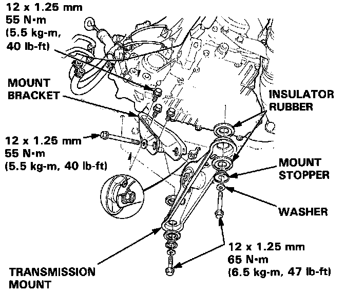
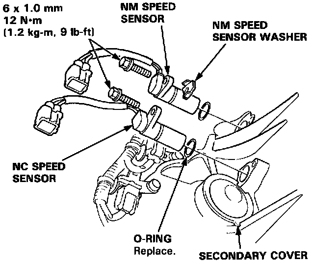

Transmission Speed Sensor: Service and Repair
A/T Speed Sensor ReplacementWARNING: Make sure lifts, jacks and safety stands are placed properly.
1. Raise the car.

2. Remove the transmission mount and mount bracket.
3. Disconnect the speed sensor connector.
4. Remove the 6 mm bolt from the transmission housing and remove the NM and/or NC speed sensor(s).

5. Replace the O-ring with a new one before reassembling the speed sensor.
NOTE: Install the NM speed sensor with the NM speed sensor washer. The NC speed sensor has no washer.